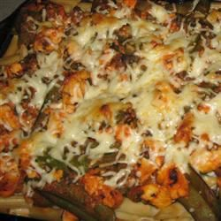

Béchamel Chicken Pasta

image by allrecipes
Description
This béchamel chicken pasta recipe is a tweak on a typical Middle Eastern béchamel pasta. It consists of chicken breast, penne pasta, vegetables, and herbs, and is topped with a luscious béchamel and mozzarella cheese. It's baked until nice and bubbly.
Ingredients
- 1 (16 ounce) package dried penne pasta
- 2 tablespoons olive oil
- 1 small onion, diced
- 1 green bell pepper, diced
- 3 cloves garlic, minced
- 2 skinless, boneless chicken breasts, cubed
- 1 bunch cilantro
- 1 (6 ounce) can Italian-flavored tomato paste
- ½ cup frozen peas
- ½ cup water, or more or less as needed
- 3 sprigs fresh dill, chopped
- salt and ground black pepper to taste
- 5 tablespoons butter
- 1 cube chicken bouillon
- 5 tablespoons all-purpose flour
- 3 cups milk
- ground black pepper to taste
- 2 cups shredded mozzarella cheese
Steps
- Bring a large pot of lightly salted water to a boil. Add penne and cook, stirring occasionally, until tender yet firm to the bite, 10 to 12 minutes. Drain.
- Preheat the oven to 350 degrees F (175 degrees C).
- Heat oil in a skillet over medium heat. Add onion, bell pepper, and garlic; cook until tender. Stir in chicken; cook until almost cooked through. Stir in cilantro, tomato paste, peas, enough water to make a thick sauce, and dill; cook and stir until chicken is no longer pink and juices run clear, and mixture is heated through. Season with salt and black pepper.
- Melt butter in a saucepan over medium heat. Add bouillon cube; stir until dissolved. Stir in flour until smooth, stirring constantly. Stir in milk; season with black pepper. Continue cooking and stirring until béchamel sauce is thick enough to coat the back of a spoon.
- Combine penne and ½ béchamel sauce in a bowl. Transfer ½ penne mixture to a baking dish; layer with ½ chicken mixture, and ½ mozzarella cheese. Layer with remaining each ½ penne mixture, ½ chicken mixture, and ½ béchamel sauce. Top with remaining ½ mozzarella cheese.
- Bake in the preheated oven until bubbly, about 30 minutes.
Home